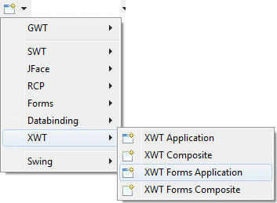
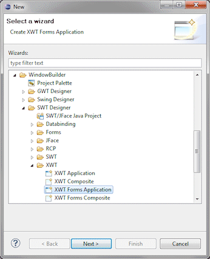
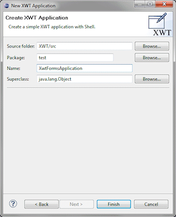
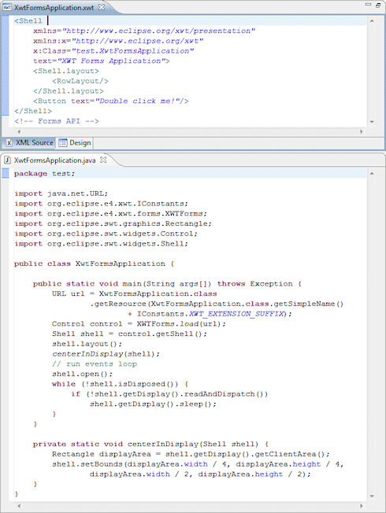

|
The XWT
Forms Application wizard creates
a main class that instantiates and shows a top-level Shell. The wizard can be
selected from the drop down wizard menu or from the
Eclipse New wizard.
To use the wizard, select the project source folder and package to contain the class. Then enter the class name and hit the Finish button. Note that XWT support is available for Eclipse 3.5, 3.6 and above. The Eclipse XML Editors and Tools feature should be loaded into Eclipse for the optimal XML editing experience. For more information on using Eclipse Forms, see the Eclipse Forms Programming Guide. |
|
  |
|
 When editing XWT Applications, all of the standard SWT layouts, containers, widgets and menus are available. Custom or third party controls may be added via the Choose Component command. |